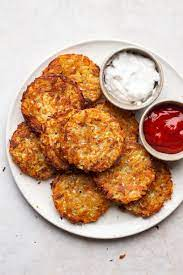

Crispy Hash Browns
Good, old-fashioned, restaurant-style hash browns.

Description
Ingredients
- Potatoes
- Onion
- Flour
- Egg
- Oil
- Salt
- Pepper
How to Make Crispy Hash Browns
Here's a very brief overview of what you can expect when you make Hash Browns:
- Shred potatoes
- Mix potatoes, onion, flour and egg
- Heat oil in a skillet
- Cook for 5 minutes per side